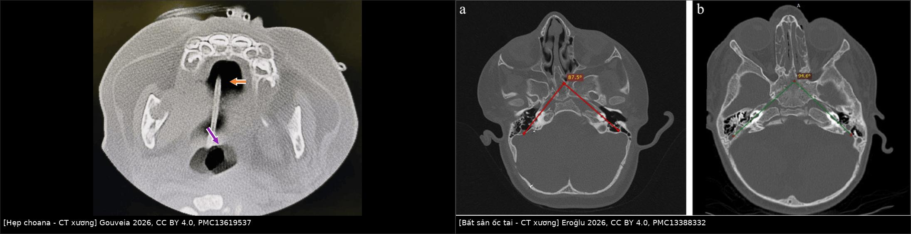
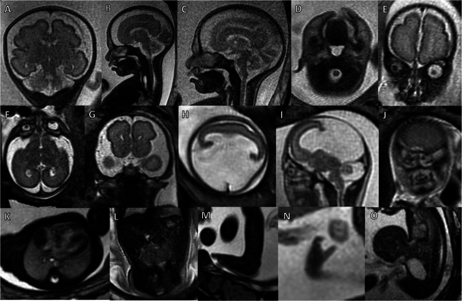
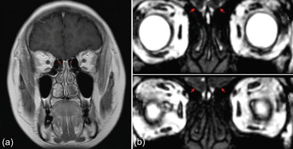
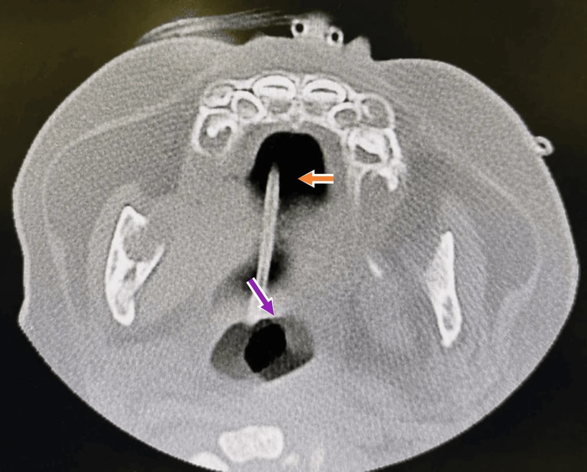
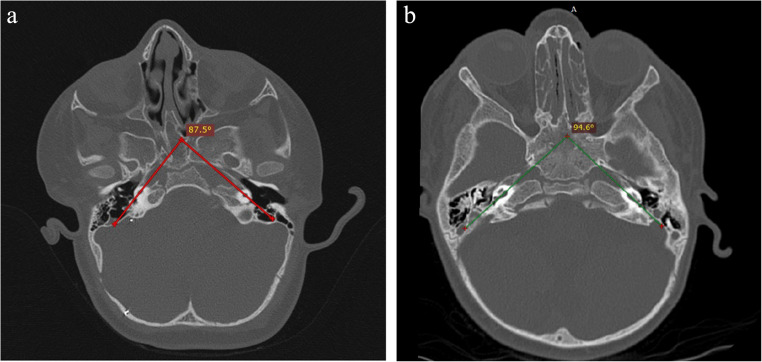

1951 — Hội chứng CHARGE: hẹp mũi sau, bất sản hành khứu giác và bất sản ốc tai / CHARGE syndrome
Tags: pattern:hep-bam-sinh pattern:bat-san vung:dau-co vung:mui vung:xoang vung:oc-tai vung:xuong-thai-duong protocol:CT-xuong-lat-1mm protocol:MRI-so-nao
Mức chắc chắn (certainty): tổng hợp y văn (literature synthesis) — số liệu từ một phân tích gộp 70 nghiên cứu/1.564 bệnh nhân (PMC13737458), một đoàn hệ 70 trẻ hẹp mũi sau (PMC13038761), một đoàn hệ 18 bệnh nhân CHARGE chụp CT xương thái dương (PMC13388332), một phân tích gộp 85 bệnh nhân/99 tai cấy ốc tai điện tử (PMID 42087294), và các ca nguyên văn có ảnh (PMC8269040; PMC13619537; PMC13342138; PMC12911516). Không có thử nghiệm ngẫu nhiên; ngưỡng chẩn đoán là tiêu chuẩn lâm sàng Blake, chỗ suy luận được ghi rõ.
Câu chốt: CHARGE là bệnh đa dị tật do CHD7, trong đó ba tầng tổn thương hay bị đọc rời rạc chính là đường thở (hẹp mũi sau), tai (bất sản ốc tai/ống bán khuyên) và khứu giác (bất sản hành khứu giác). Bốn con số quyết định: (1) tần suất 1/15.000–17.000 trẻ sinh sống, ~30% tử vong trước 5 tuổi (PMC12613921); (2) hẹp mũi sau gặp 31,5% hai bên và 15,4% một bên khi gộp 58 nghiên cứu (PMC13737458); (3) bất sản/giảm sản ống bán khuyên 73,6%, ốc tai 49,8%, dây thần kinh ốc tai 49,1%, điếc tiếp nhận 56,9% (PMC13737458); (4) hẹp lại sau mổ hẹp mũi sau ở CHARGE 31,3% — đặt stent không làm giảm mà còn liên quan tăng hẹp lại (PMC8269040).
1. Tổng quan bệnh học – cơ chế hình ảnh (TẠI SAO)
1.1 CHD7 và “ba trục” của CHARGE
- CHARGE là từ viết tắt: Coloboma (khuyết mắt), Heart defect (dị tật tim), Atresia choanae (hẹp mũi sau), Retarded growth/development (chậm phát triển), Genital hypoplasia (thiểu sản sinh dục), Ear anomalies/deafness (dị tật tai/điếc). Nguyên nhân chính là đột biến CHD7 (chromodomain helicase DNA-binding protein 7) — gen điều hòa nhiễm sắc chất, ảnh hưởng tế bào mào thần kinh và phát triển trục giữa.
- TẠI SAO cùng một gen gây cả mũi sau, tai và khứu giác: cả ba cấu trúc đều phát triển từ trục giữa sọ mặt – não trước và tế bào mào thần kinh trong cùng cửa sổ phôi thai. CHD7 thiếu hụt → hẹp mũi sau (dị tật trục giữa), bất sản ốc tai/ống bán khuyên (dị tật tai trong), bất sản hành khứu giác (dị tật não trước) — không phải ba bệnh riêng lẻ mà là ba mặt của một bệnh.
- Dịch tễ và tiên lượng: 1/15.000–17.000 trẻ sinh sống; ~30% tử vong trước 5 tuổi (PMC12613921). Kiểu hình thường gặp: khuyết mắt 80–85%, dị tật tim 60%, hẹp mũi sau 60–65%, chậm phát triển 80%, dị tật sinh dục 70–75% ở bé trai, dị tật tai/điếc 80% (PMC12613921 dẫn y văn).
- Tiêu chuẩn Blake: 3 tiêu chuẩn chính, hoặc 2 chính + 2 phụ. Chính: khuyết mắt, hẹp mũi sau, dị tật vành tai đặc trưng, rối loạn chức năng dây thần kinh sọ. Phụ: thiểu sản sinh dục, chậm phát triển, dị tật tim, chậm tăng trưởng, sứt môi/vòm, rò khí quản–thực quản, mặt đặc trưng (PMC8269040).
1.2 Vì sao CT và MRI nhìn thấy tổn thương (vật lý + giải phẫu)
- Hẹp mũi sau trên CT xương: mảnh xương/màng chắn cửa sau mũi có đậm độ xương 700–1.000 HU (thể xương/hỗn hợp) hoặc mô mềm ~40–60 HU (thể màng thuần). Dấu hiệu đi kèm: vomer dày, mảnh chân bướm trong bị đẩy vào trong (medial bowing of the medial pterygoid plate), ổ mũi chứa dịch. Đo độ dày mảnh tắc và chiều rộng choana trên lát ≤ 1 mm — cần lát mỏng vì mảnh tắc ở trẻ có thể chỉ 1–3 mm.
- Bất sản ốc tai trên CT xương thái dương: ốc tai bình thường có 2,5 vòng; bất sản/giảm sản làm thiếu vòng, mất phân chia khoang, góc ốc tai hẹp. Trong 18 bệnh nhân CHARGE, góc ốc tai 94,49° ± 10,02° so với 114,02° ± 8,17° ở nhóm chứng (p < 0,001); giảm sản ốc tai type III là thể thường gặp nhất (PMC13388332). Góc hẹp là cảnh báo kỹ thuật khi đặt điện cực cấy ốc tai.
- Dây thần kinh ốc tai trên MRI: 3D CISS/FIESTA (hoặc T2 lát mỏng 0,8–1 mm) cho thấy dây thần kinh trong ống tai trong; giảm sản/không có dây gặp 49,1% (PMC13737458) — đây là lý do không thể chỉ dựa CT trước khi cấy ốc tai.
- Bất sản hành khứu giác trên MRI: hành khứu giác là cấu trúc 1–2 mm nằm trên mảnh sàng, nhìn rõ nhất trên T2 coronal lát mỏng qua rãnh khứu giác hoặc CISS. Bất sản hai bên → mất rãnh khứu giác, không thấy hành khứu giác; trên thai, dấu hiệu có thể thấy từ ~29 tuần (PMC13342138). Bất sản hành khứu giác gặp 28,8% trong CHARGE (PMC13737458) — nhưng không đặc hiệu (gặp cả Kallmann; mục 5).
1.3 Ngưỡng và số liệu của ba tầng tổn thương
- Đường thở: hẹp mũi sau gặp 36–65% trong CHARGE (PMC8269040 dẫn y văn); gộp 58 nghiên cứu: một bên 15,4% (95% CI 11,6–19,2), hai bên 31,5% (95% CI 23,3–39,7); laryngomalacia 27,7%, mở khí quản 23,6% (PMC13737458). Tần suất chung ở trẻ sinh sống 1/5.000–8.000 — thể xương/hỗn hợp chiếm đa số, thể màng thuần hiếm (PMC13398210).
- Tai: viêm tai giữa tiết dịch 54,5%, bất sản/giảm sản ống bán khuyên 73,6%, giảm sản ốc tai 49,8%, giảm sản dây thần kinh ốc tai 49,1%, điếc tiếp nhận 56,9% (PMC13737458). Trong 70 trẻ hẹp mũi sau, 49% có rối loạn thính lực; điếc tiếp nhận 43% ở hẹp hai bên so với 9% ở hẹp một bên (p < 0,01) (PMC13038761).
- Khứu giác và thần kinh sọ: bất thường khứu giác 28,8%, liệt mặt 35,2%, sứt môi/vòm 25,6% (PMC13737458) — liệt mặt là yếu tố nguy cơ phẫu thuật (đường mổ, giác mạc).
- Kết quả cấy ốc tai: gộp 85 bệnh nhân/99 tai: CAP tăng +2,9 điểm (p = 0,004), IT-MAIS tăng +11,9 (p = 0,036) (PMID 42087294). Loạt 14 trẻ/22 tai: tuổi cấy trung bình 25,9 tháng, CAP 0,36 → 3,21, 42,9% đạt CAP ≥ 4; tất cả đều có thiếu hụt dây thần kinh ốc tai nhưng vẫn cải thiện (PMID 38738912).
2. Mẫu hình + chẩn đoán phân biệt theo vị trí (gamut)
2.1 Tắc mũi sau ở trẻ sơ sinh
- Hẹp mũi sau hai bên (bilateral choanal atresia): cấp cứu đường thở — trẻ tím khi bú, hồng lại khi khóc (vì chỉ thở bằng miệng khi khóc); ống thông mũi không qua được cả hai bên.
- Hẹp một bên: thường chẩn đoán muộn — chảy mũi mủ một bên kéo dài, ngạt một bên; có thể phát hiện ở tuổi trưởng thành (ca 22 tuổi trong PMC13398210).
- Gamut khác: hẹp lỗ hình lê (pyriform aperture stenosis) — hẹp xương hàm trên giữa, thường kèm răng cửa giữa; lệch vách mũi; nang ống lệ–mũi; thoát vị não–màng não (encephalocele); u quái mũi.
2.2 Dị tật tai trong
- CHARGE: giảm sản ốc tai (type III thường gặp), bất sản ống bán khuyên, ống tai trong hẹp, dây thần kinh giảm sản.
- Khác: Pendred (ốc tai Mondini + ống tiền đình giãn rộng), nhiễm CMV bẩm sinh (không phải dị tật xương điển hình), Trisomy 21 (hẹp ống tai trong, dị tật mũi–xoang), Waardenburg, bất sản dây thần kinh ốc tai đơn thuần.
2.3 Bất sản hành khứu giác
- Kallmann: bất sản hành khứu giác + suy sinh dục do thiếu GnRH, không có hẹp mũi sau/dị tật tai.
- CHARGE: bất sản hành khứu giác kèm hẹp mũi sau, dị tật tai, khuyết mắt, dị tật tim.
- Khác: mất khứu giác bẩm sinh đơn thuần, sau chấn thương, sau viêm màng não.
3. Bảng so sánh phân biệt (ma trận đối chiếu)
| Thực thể | Hình ảnh điển hình | Chốt vào (rule-in) | Chốt loại (rule-out) | Gợi ý xác nhận |
|---|---|---|---|---|
| CHARGE | Hẹp mũi sau hai bên + bất sản/giảm sản ống bán khuyên + giảm sản ốc tai + bất sản hành khứu giác + khuyết mắt/dị tật tim | ≥ 3 tiêu chuẩn chính, hoặc 2 chính + 2 phụ; tổn thương nhiều tầng (mũi sau + tai trong + khứu giác) | Hẹp mũi sau đơn độc, tai trong bình thường, khứu giác bình thường | CHD7; CT xương thái dương ≤ 1 mm; MRI CISS; tim–mắt–nội tiết |
| Hẹp mũi sau đơn thuần | Mảnh tắc xương/màng một bên; vomer dày; tai trong bình thường | Hẹp một bên, không dị tật khác | Có bất sản ốc tai/ống bán khuyên → nghĩ CHARGE | CT ≤ 1 mm; nội soi; thính lực |
| Trisomy 21 + hẹp mũi sau | Hẹp choana ± hẹp ống tai trong; không bất sản ống bán khuyên | Bộ mặt Down + tim bẩm sinh (AVSD) + giảm trương lực | Dị tật tai trong kiểu CHARGE | Karyotype/NIPT; siêu âm tim |
| Kallmann | Bất sản hành khứu giác hai bên trên MRI; không hẹp choana, tai trong bình thường | Vô khứu giác + suy sinh dục do thiếu GnRH | Có hẹp mũi sau/dị tật tai → nghĩ CHARGE | MRI coronal T2/CISS; LH/FSH, testosterone |
| Pendred | ốc tai Mondini + ống tiền đình giãn rộng; choana bình thường | Điếc tiếp nhận + bướu giáp; EVA | Bất sản ống bán khuyên/ốc tai kiểu CHARGE | CT xương thái dương; iodide perchlorate; gen SLC26A4 |

Trái: CT xoang lát mỏng — vomer dày, mảnh tắc choana (ca Trisomy 21, cùng hình thái với CHARGE; không phải ca CHARGE). Phải: CT xương thái dương — giảm sản ốc tai type I (a, góc 87,5°) và type III (b, góc 94,0°) ở bệnh nhân CHARGE. Nguồn: Gouveia 2026, CC BY 4.0, PMC13619537; Eroğlu 2026, CC BY 4.0, PMC13388332 — ảnh ghép letterbox.3.1 Vì sao phải tìm đủ ba tầng thay vì dừng ở mũi
- Bỏ sót tai trong = bỏ sót điếc: 56,9% có điếc tiếp nhận; nếu chỉ mổ hẹp mũi sau mà không đo thính lực/CT xương thái dương, trẻ mất cửa sổ ngôn ngữ (PMC13737458).
- Bỏ sót khứu giác = bỏ sót an toàn: trẻ không ngửi được dễ hít sặc, bỏng, ngộ độc; bất thường khứu giác 28,8% (PMC13737458).
- Bỏ sót tim/mắt = bỏ sót tử vong: dị tật tim 60%, tử vong ~30% trước 5 tuổi — khám tim và mắt trước khi xuất viện (PMC12613921).
4. Protocol chụp + tiêu chuẩn chẩn đoán
4.1 CT
- CT xoang + xương thái dương, lát ≤ 1 mm, thuật toán xương, không cản quang khi nghi hẹp mũi sau hoặc dị tật tai.
- Đo và ghi: độ dày mảnh tắc (mm), chiều rộng choana hai bên, độ dày vomer, hướng mảnh chân bướm; mô tả thể xương/hỗn hợp/màng.
- Xương thái dương: số vòng ốc tai, phân loại giảm sản (type I–IV), góc ốc tai, ống tai trong, chuỗi xương con, ống bán khuyên.
- Trẻ sơ sinh: cân nhắc giảm liều theo ALARA; không chụp lặp lại nếu đã đủ trả lời câu hỏi phẫu thuật.
4.2 MRI
- MRI sọ + xương thái dương: T2 coronal 0,8–1 mm qua rãnh khứu giác + 3D CISS/FIESTA cho dây thần kinh sọ VII–VIII.
- Chỉ định: trước cấy ốc tai (đánh giá dây thần kinh ốc tai), nghi bất sản hành khứu giác, đánh giá dị tật não trước/dị tật trục giữa.
- Thai: MRI thai T2 có thể thấy bất sản hành khứu giác và các dấu hiệu trục giữa từ ~29 tuần; không thay thế siêu âm sàng lọc (PMC13342138).

Hình phenotyping thai: hàng trên là CHARGE (A khoang dịch ngoài trục giãn; B teo thực quản; C–D sứt môi/vòm; E bất sản hành khứu giác). Các hàng dưới là Trisomy 13/18 (đối chứng). Nguồn: Stuempflen 2026, CC BY 4.0, PMC13342138 — Fig. 2, nguyên bản.4.3 Tiêu chuẩn chẩn đoán và lộ trình
flowchart TD
A[Trẻ sơ sinh ngạt mũi, tím khi bú, hồng khi khóc] --> B{Ống thông qua mũi sau?}
B -->|Không qua được| C[CT xoang lát 1 mm]
C --> D{Có mảnh tắc choana?}
D -->|Có| E[Hẹp mũi sau]
E --> F{Có dấu hiệu CHARGE?<br/>khuyết mắt, tim, tai, thần kinh sọ}
F -->|Có| G[CHD7 + tim + mắt + thính lực + khứu giác]
F -->|Không| H[Điều trị hẹp mũi sau đơn thuần]
D -->|Không| I[Tìm hẹp lỗ hình lê, lệch vách, thoát vị não-màng não]
G --> J[CT xương thái dương + MRI CISS<br/>trước cấy ốc tai]
- Đường thở: hẹp hai bên là cấp cứu — đặt ống thông miệng/đường thở miệng, mổ nội soi qua mũi khi ổn định.
- Hẹp lại sau mổ: 31,3% ở CHARGE, 47,8% ở không hội chứng; đặt stent liên quan hẹp lại nhiều hơn (CHARGE 40% vs 16,7%; không hội chứng 63,6% vs 33,3%) và tăng số lần nong (p = 0,018) → cân nhắc kỹ, không đặt stent thường quy (PMC8269040).
- Thính lực: đo ABR/thính lực đồ sớm; nếu điếc tiếp nhận nặng → MRI dây thần kinh ốc tai trước cấy; tư vấn kết quả CAP/IT-MAIS cải thiện nhưng không đồng đều (PMID 42087294; PMID 38738912).
5. Biến thể bình thường và cạm bẫy
- Hẹp mũi sau một bên có thể chẩn đoán ở người lớn: ngạt mũi + chảy mũi mủ một bên nhiều năm, dễ bị điều trị như viêm mũi mạn; CT lát mỏng là chốt (ca 22 tuổi, PMC13398210).
- Thể màng thuần có thể bị bỏ sót trên CT: mảnh màng mỏng, đậm độ mô mềm, không thấy rõ trên lát dày; cần nội soi mũi đối chiếu (PMC8269040).
- Bất sản hành khứu giác không đồng nghĩa CHARGE: cùng dấu hiệu gặp trong Kallmann — ca minh họa dưới đây là Kallmann, không phải CHARGE; phân biệt bằng hẹp choana, dị tật tai trong, khuyết mắt và tuyến sinh dục.

Ca Kallmann 30 tuổi: (a) T1 coronal, (b) CISS — mũi tên đỏ chỉ vị trí không có hành khứu giác. Đây là dấu hiệu dùng chung, không phải ca CHARGE. Nguồn: Soryadharma 2026, CC BY 4.0, PMC12911516 — Fig. 3.- Bất sản ống bán khuyên đơn độc có thể gặp ở người không CHARGE; đừng chẩn đoán hội chứng chỉ dựa một dị tật.
- Dây thần kinh ốc tai không có trên MRI làm kết quả cấy ốc tai kém/không thể — cần MRI trước mổ, không chỉ CT (PMC13737458).
- Liệt mặt 35,2% và dị tật chuỗi xương con làm phẫu thuật tai khó; đường vào và giải phẫu dây VII phải đánh giá trước (PMC13737458).
- Đặt stent sau mổ hẹp mũi sau không giảm hẹp lại, còn tăng nong — tránh “làm thêm cho chắc” (PMC8269040).
- Chẩn đoán muộn gây tử vong: nếu chỉ sửa mũi mà không tầm soát tim, mắt, thính lực, khứu giác, nội tiết, bỏ sót dị tật tim (60%) — nguyên nhân tử vong chính (PMC12613921).
- Thai: bất sản hành khứu giác có thể chưa thấy trước 29 tuần; MRI sớm bình thường không loại trừ CHARGE (PMC13342138).
6. Tự lượng giá — Blind Quiz
Ca 1 — Sơ sinh 2 ngày, tím khi bú, hồng khi khóc, không luồn được ống thông mũi hai bên.

- Hỏi: mô tả mảnh tắc và vomer? Chẩn đoán? Cần tìm thêm gì để không bỏ sót hội chứng?
Bấm để hiện đáp án (findings + chẩn đoán)
- Vomer dày, mảnh xương chắn cửa sau mũi (mũi tên cam: mảnh tắc; mũi tên tím: hẹp/xơ vomer), ổ mũi sau bị bít → hẹp mũi sau hai bên.
- Đây là cấp cứu đường thở; sau khi ổn định phải tìm khuyết mắt, dị tật tim, dị tật vành tai, liệt mặt, bất sản hành khứu giác → nghi CHARGE, gửi CHD7.
- Lưu ý nguồn: ca minh họa là Trisomy 21, cùng hình thái hẹp choana; không phải ca CHARGE.
- Nguồn: Gouveia 2026, CC BY 4.0, PMC13619537 — Fig. 3, nguyên bản.
Ca 2 — Bé 3 tuổi CHARGE, điếc tiếp nhận hai bên, chuẩn bị cấy ốc tai.

- Hỏi: bất thường ốc tai là gì? Góc ốc tai so với bình thường? Còn cần thêm hình ảnh nào trước mổ?
Bấm để hiện đáp án
- Giảm sản ốc tai: (a) type I — góc 87,5°; (b) type III — góc 94,0°; ốc tai thiếu vòng/không phân chia khoang.
- Ở 18 bệnh nhân CHARGE, góc trung bình 94,49° ± 10,02° so với 114,02° ± 8,17° ở chứng (p < 0,001) — góc hẹp làm đặt điện cực khó hơn.
- Cần MRI CISS/FIESTA đánh giá dây thần kinh ốc tai (giảm sản/không có 49,1%) trước khi quyết định cấy; kết quả CAP/IT-MAIS cải thiện nhưng không đồng đều.
- Nguồn: Eroğlu 2026, CC BY 4.0, PMC13388332 — Fig. 2, nguyên bản.
Ca 3 — Bé trai 14 tuổi: không ngửi được từ nhỏ, chậm dậy thì, không ngạt mũi.
- Hỏi: dấu hiệu trên MRI? Hai chẩn đoán phân biệt chính? Dấu hiệu nào giúp phân biệt?
Bấm để hiện đáp án
- Không thấy hành khứu giác hai bên (mũi tên đỏ), rãnh khứu giác mất → vô khứu giác bẩm sinh.
- Phân biệt: Kallmann (kèm suy sinh dục do thiếu GnRH, LH/FSH thấp) và CHARGE (kèm hẹp mũi sau, bất sản ốc tai/ống bán khuyên, khuyết mắt, dị tật tim).
- Ca minh họa là Kallmann; nếu có hẹp choana/dị tật tai trong → đổi hướng sang CHARGE và gửi CHD7.
- Nguồn: Soryadharma 2026, CC BY 4.0, PMC12911516 — Fig. 3, nguyên bản.
Bài liên quan chéo
- 1741 – Kallmann: thiếu sản hành khứu giác
- 205 – Xơ hóa mè đạo sau viêm mê nhĩ
- 692 – Microtia–atresia: phục hồi thính lực
- 695 – Hội chứng Treacher Collins–Nager
- 710 – Giải phẫu CT mũi–xoang
- 497 – Theo dõi sau cấy ốc tai ở trẻ
Không dùng để chẩn đoán độc lập khi chưa có người hướng dẫn.